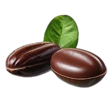
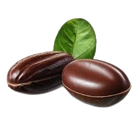

Naturel

 



KoKoa Bio
kokoa bio est une entreprise spécialisé dans les dérivés du cacao naturel dont son premier produit est est un complément alimentaire. Kokoa Bio s'engage à proposer des produits de haute qualité, alliant les bienfaits nutritionnels du cacao à une approche respectueuse de l'environnement. Chaque ingrédient est soigneusement sélectionné afin de garantir une traçabilité optimale et un impact positif sur les communautés de producteurs. En plus de son complément alimentaire, l'entreprise explore également diverses applications des dérivés du cacao, comme les poudres riches en antioxydants et les substituts naturels au sucre. Avec une passion pour l'innovation, Kokoa Bio souhaite promouvoir un mode de vie sain tout en préservant la richesse du patrimoine cacaoier. Embarquez avec nous dans cette aventure gustative et bénéfique pour le corps, tout en soutenant une agriculture durable et éthique.